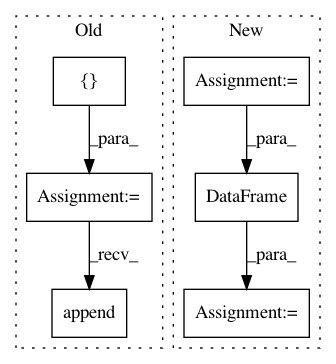

f819a34e2fbea2dab4997b3b236b517fa12d115d,examples/02_predict_employee_salaries.py,,,#,115
Before Change
from sklearn.model_selection import KFold, cross_val_score
import numpy as np
all_scores = []
cv = KFold(n_splits=5, random_state=12, shuffle=True)
scoring = "r2"
for method in encoding_methods:
pipeline = make_pipeline(method)
scores = cross_val_score(pipeline, df, y, cv=cv, scoring=scoring)
print("{} encoding".format(method))
print("{} score: mean: {:.3f}; std: {:.3f}\n".format(
scoring, np.mean(scores), np.std(scores)))
all_scores.append(scores)
//////////////////////////////////////////////////////////////////////////////////////////////////////////////////////////////////////////////////
// Plotting the results
// --------------------
After Change
from sklearn.model_selection import KFold, cross_val_score
import numpy as np
all_scores = dict()
cv = KFold(n_splits=5, random_state=12, shuffle=True)
scoring = "r2"
for method in encoding_methods:
pipeline = make_pipeline(method)
scores = cross_val_score(pipeline, df, y, cv=cv, scoring=scoring)
print("{} encoding".format(method))
print("{} score: mean: {:.3f}; std: {:.3f}\n".format(
scoring, np.mean(scores), np.std(scores)))
all_scores[method] = scores
//////////////////////////////////////////////////////////////////////////////////////////////////////////////////////////////////////////////////
// Plotting the results
// --------------------
// Finally, we plot the scores on a boxplot:
import seaborn
ax = seaborn.boxplot(data=pd.DataFrame(all_scores), orient="h")
import matplotlib.pyplot as plt
plt.ylabel("Encoding", size=17)
plt.xlabel("Prediction accuracy", size=17)
plt.yticks(size=17)
In pattern: SUPERPATTERN
Frequency: 4
Non-data size: 6
Instances
Project Name: dirty-cat/dirty_cat
Commit Name: f819a34e2fbea2dab4997b3b236b517fa12d115d
Time: 2018-06-08
Author: gael.varoquaux@normalesup.org
File Name: examples/02_predict_employee_salaries.py
Class Name:
Method Name:
Project Name: NTMC-Community/MatchZoo
Commit Name: a871536bcbb38b9ca03b0bc777712d8c0a79ad90
Time: 2018-12-13
Author: i@uduse.com
File Name: matchzoo/data_pack/pack.py
Class Name:
Method Name: pack
Project Name: dirty-cat/dirty_cat
Commit Name: f819a34e2fbea2dab4997b3b236b517fa12d115d
Time: 2018-06-08
Author: gael.varoquaux@normalesup.org
File Name: examples/03_midwest_survey.py
Class Name:
Method Name:
Project Name: QUANTAXIS/QUANTAXIS
Commit Name: 5c34d497ab32ea731b687c5863f104615f666d06
Time: 2019-02-16
Author: yutiansut@qq.com
File Name: QUANTAXIS/QAFetch/QAQuery.py
Class Name:
Method Name: QA_fetch_index_min